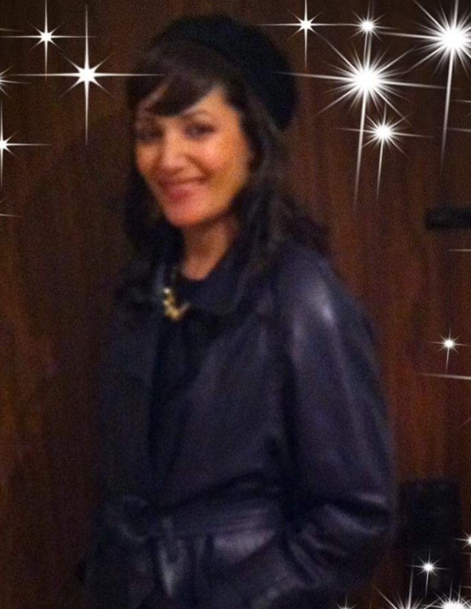

sabrina story

Five interesting facts about me
- I do my alia from Paris,France at the age of 12

- I gratued from high school at the age of 17.
- I first got married at the age 21.
- I gratued from a land appraisal and B.A at the age 24.
- I am mother of five wonderful children from the age of 17 to a year and half.
Studies and knowledge
I did a matriculation in science and a bachelor’s degree in business administration and a certificate of real estate appraisal
computer knowledge
- windows
- powerpoint
- exel
- css
- html
- Notepad++
These days, I am fulfilling a dream
I started studying software tester at QAMASTER College
link the site
Hobbies
- nature hikes
- Amateur confectionery
- Amateur photography
- reading
The purposes in my life
- love the over like yoursef"vehahaveta lerehaha kamoha"
- Raising my children with dignity while educating of giving and knowledge
- Right now my main goal to succeed in software tester studies is both a dream come true
and a means for me to achieve financial independence and regain self-confidence